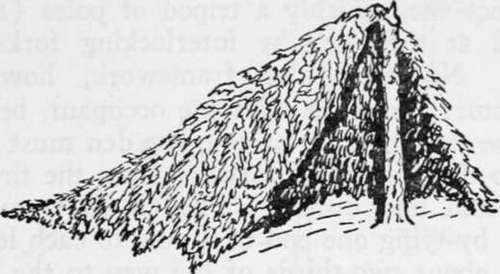
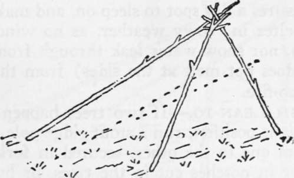

Chapter XIII. Tomahawk Shelters. Axemen's Camps. Caches. Masked Camps
Description
This section is from the book "Camping And Woodcraft", by Horace Kephart. Also available from Amazon: Camping and Woodcraft.
Chapter XIII. Tomahawk Shelters. Axemen's Camps. Caches. Masked Camps
"The simplest and most primitive of all camps is the 'Indian camp/ It is easily and quickly made, is warm and comfortable, and stands a pretty heavy rain when properly put up. This is how it is made: Let us say you are out and have slightly missed your way. The coming gloom warns you that night is shutting down. You are no tenderfoot. You know that a place of rest is essential to health and comfort through the long, cold, November night.
"You dive down the first little hollow until you strike a rill of water, for water is a prime necessity. As you draw your hatchet you take in the whole situation at a glance. The little stream is gurgling downward in a half-choked frozen way. There is a huge sodden hemlock lying across it. One clip of the hatchet shows it will peel. There is plenty of smaller timber standing around: long, slim poles, with a tuft of foliage on top. Five minutes suffices to drop one of these, cut a twelve-foot pole from it, sharpen the pole at each end, jam one end into the ground and the other into the rough bark of a scraggy hemlock, and there is your ridge pole. Now go ~with your hatchet—for the bushiest and most promising young hemlocks within reach. Drop them and draw them to camp rapidly.
"Next, you need a fire. There are fifty hard, resinous limbs sticking up from the prone hemlock; lop off a few of these, and split the largest into match timber; reduce the splinters to shavings, scrape the wet leaves from your prospective fire-place, and strike a match on the balloon part of your* trousers. If you are a woodsman you will strike but one. Feed the fire slowly at first; it will gain fast. When you have a blaze ten feet high, look at your watch. It is 6 P. M. You don't want to turn in before 10 o'clock, and you have four hours to kill before bedtime. Now, tackle the old hemlock, take off every dry limb, and then peel the bark and bring it into camp. You will rind this takes an hour or more.
"Next, strip every limb from your young hemlocks, and shingle them on your ridge pole. This will make a sort of bear den, very well calculated to give you a comfortable night's rest. The bright fire will soon dry the ground that is to be your bed, and you will have plenty of time to drop another small hemlock and make a bed of browse a foot thick. You do it. Then you make your pillow. Now, this pillow is essential to comfort, and is very simple. It is half a yard of muslin, sewed up as a bag, and filled with moss or hemlock ibrowse. You can empty it and put it in your pocket, where it takes up about as much room as a handerchief.
"You have other little muslin bags—an' you be Wise. One holds a couple of ounces of good tea; another sugar; another is kept to put your loose duffel in: money, match safe, pocket knife (when you go to bed). You have a pat of butter and a bit of pork, with a liberal slice of brown bread; and before turning in you make a cup of tea. ^roil a slice of pork, and indulge in a lunch.
"Ten o'clock comes. The time has not passed tediously. You are warm, dry, and well fed. Your old friends, the owls, come near the fire-light and salute you with their strange, wild notes; a distant fox sets up for himself with his odd barking cry, and you turn in. Not ready to sleep just yet.
"But you drop off; and it is two bells in the morning watch when you awaken with a sense of chill and darkness. The fire has burned low, and snow is falling. The owls have left, and a deep silence broods over the cold, still forest. You rouse the fire, and, as the bright light shines to the furthest recesses of your forest den, get out the little pipe, and reduce a bit of navy plug to its lowest denomination. The smoke curls lazily upward; the fire makes you warm and drowsy, and again you lie down —to again awaken with a sense of chilliness—to find the fire burned low, and daylight breaking. You have slept better than you would in your own room at home. You have slept in an 'Indian camp.'
"You have also learned the difference between such a simple shelter and an open-air bivouac under a tree or beside an old log."—'("Nessmuk," Woodcraft).
Why peel the old hemlock? Because the thick bark is resinous, is good to "brand up" a fire, and to cook over. Those hemlock stubs by themselves are rather poor fuel—you took what was handy—but, as I have already warned, chop them off well above their butts where they join the log, or you will have a nicked hatchet.
Fig. 55. Lopped Tree Den.
Nowadays it is prohibited, on public lands, to make a fire against the trunk of a tree, for it ruins the tree. The ridge pole can be supported by a low limb, or it can be set up on shears.
If one is alone, and needs nothing but a windbreak at night, a quick and easy way is to select a small, thick foliaged evergreen, cut the stem partly in two at about five feet from the ground, then push the top over till it rests on the ground, the stem still being fast to the butt. Trim off the boughs from the inside, to use in thatching. Partially sever the upstanding limbs on the outside and let them hang down as part of the roof. Add your thatching, and branches from nearby small trees, as may be needed to make your den wind-proof (Fig. 55). This will be little protection, however, against rain, as the angle of the ridge is not steep enough, unless the tree be cut higher.
Fig. 56. Straddle-bug Frame.
Where no tree grows on a favorable place, one can erect very quickly a tripod of poles (Fig. 56) secured at the apex by interlocking forks, or by tying. No triangular framework, however, is satisfactory for more than one occupant, because, if there be two or more of you, the den must be made so deep that the angle farthest from the fire is sure to be cold and dismal. The tripod frame is im-pioved by tying one end of a pole to each leg of the shears, about two-thirds of the way to the top, and letting the other end rest on the ground, so that the rear of the shelter will be nearer a semi-circle than a triangle.
Continue to:
- prev: Axemanship. Qualities And Utilization Of Wood. Part 7
- Table of Contents
- next: Tomahawk Shelters. Axemen's Camps. Caches. Masked Camps. Part 2